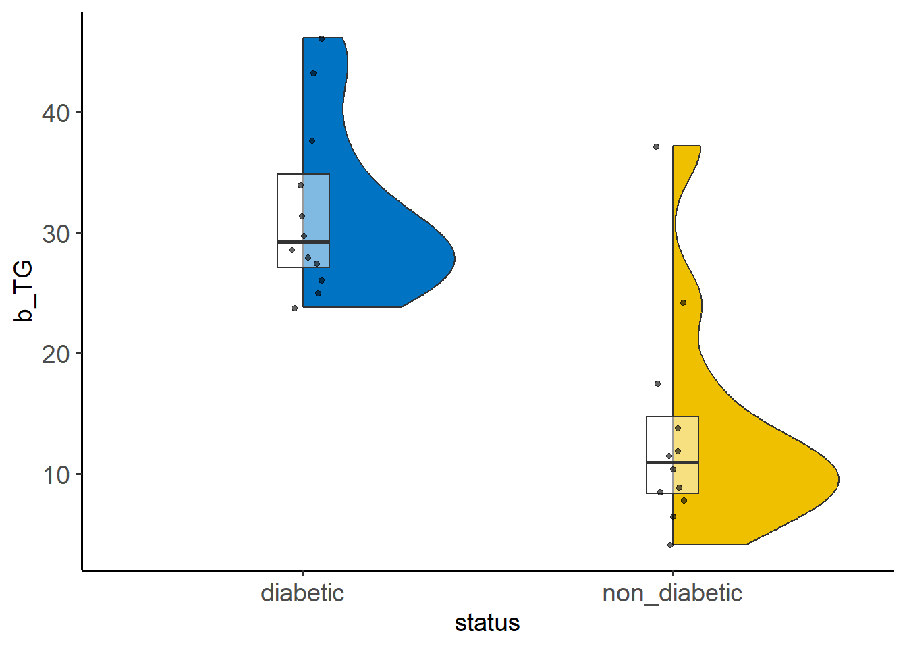

6 Wilcoxon-Mann-Whitney (Mann-Whitney U) test
The Wilcoxon-Mann-Whitney (WMW) test (sometimes called Mann-Whitney U test or Wilcoxon Rank Sum test) is used to compare two independent samples and is often considered the non-parametric alternative to the Student’s t-test when there is violation of normality or for small sample sizes. However, if the samples are very small (both smaller than four observations) then statistical significance is impossible.
When we have finished this Chapter, we should be able to:
6.1 Research question and Hypothesis Testing
We consider the data in thromboglobulin dataset that contains the urinary \(\beta\) thromboglobulin excretion (pg/ml) measured in 12 non-diabetic patients and 12 diabetic patients. The researchers used \(\alpha\) = 0.05 significance level to test if the distribution of urinary \(\beta\) thromboglobulin (b_TG) differs in the two groups.
NOTE: The null hypothesis is that the observations from one group do not tend to have higher or lower ranks than observations from the other group. This test does not compare the medians of the data as is commonly thought, it tests the whole distribution. However, if the distributions of the two groups have similar shapes and spreads (i.e., differing only in location), the WMW test can address (in most cases) whether there are differences in the medians between the two groups.(ref.)
6.2 Packages we need
We need to load the following packages:
6.3 Preraring the data
We import the data thromboglobulin in R:
library(readxl)
tg <- read_excel(here("data", "thromboglobulin.xlsx"))We inspect the data and the type of variables:
glimpse(tg)Rows: 24
Columns: 2
$ status <chr> "non_diabetic", "non_diabetic", "non_diabetic", "non_diabetic",…
$ b_TG <dbl> 4.1, 6.3, 7.8, 8.5, 8.9, 10.4, 11.5, 12.0, 13.8, 17.6, 24.3, 37…The data set tg has 24 patients (rows) and includes two variables (columns). The numeric (<dbl>) b_TG variable and the character (<chr>) status variable which should be converted to a factor (<fct>) variable using the factor() function as follows:
6.4 Explore the characteristics of distribution for each group and check for normality
The distributions can be explored visually with appropriate plots. Additionally, summary statistics and significance tests to check for normality (e.g., Shapiro-Wilk test) can be used.
Graph
We can visualize the distribution of b_TG for the two groups:
set.seed(123)
ggplot(tg, aes(x=status, y=b_TG)) +
geom_flat_violin(aes(fill = status), scale = "count") +
geom_boxplot(width = 0.14, outlier.shape = NA, alpha = 0.5) +
geom_point(position = position_jitter(width = 0.05),
size = 1.2, alpha = 0.6) +
ggsci::scale_fill_jco() +
theme_classic(base_size = 14) +
theme(legend.position="none",
axis.text = element_text(size = 14))
The above figure shows that the data in both groups are positively skewed and they have similar shaped distributions.
tg %>%
ggqqplot("b_TG", color = "status", conf.int = F) +
scale_color_jco() +
facet_wrap(~ status) +
theme(legend.position = "none")
Summary statistics
The b_TG summary statistics for each group are:
tg_summary <- tg %>%
group_by(status) %>%
dplyr::summarise(
n = n(),
na = sum(is.na(b_TG)),
min = min(b_TG, na.rm = TRUE),
q1 = quantile(b_TG, 0.25, na.rm = TRUE),
median = quantile(b_TG, 0.5, na.rm = TRUE),
q3 = quantile(b_TG, 0.75, na.rm = TRUE),
max = max(b_TG, na.rm = TRUE),
mean = mean(b_TG, na.rm = TRUE),
sd = sd(b_TG, na.rm = TRUE),
skewness = EnvStats::skewness(b_TG, na.rm = TRUE),
kurtosis= EnvStats::kurtosis(b_TG, na.rm = TRUE)
) %>%
ungroup()
tg_summary# A tibble: 2 × 12
status n na min q1 median q3 max mean sd skewness
<fct> <int> <int> <dbl> <dbl> <dbl> <dbl> <dbl> <dbl> <dbl> <dbl>
1 diabetic 12 0 23.8 27.2 29.2 34.8 46.2 31.8 7.17 1.05
2 non_diabetic 12 0 4.1 8.32 11.0 14.8 37.2 13.5 9.19 1.81
# ℹ 1 more variable: kurtosis <dbl>tg %>%
group_by(status) %>%
dlookr::describe(b_TG) %>%
select(described_variables, status, n, na, mean, sd, p25, p50, p75, skewness, kurtosis) %>%
ungroup()# A tibble: 2 × 11
described_variables status n na mean sd p25 p50 p75 skewness
<chr> <fct> <int> <int> <dbl> <dbl> <dbl> <dbl> <dbl> <dbl>
1 b_TG diabet… 12 0 31.8 7.17 27.2 29.2 34.8 1.05
2 b_TG non_di… 12 0 13.5 9.19 8.32 11.0 14.8 1.81
# ℹ 1 more variable: kurtosis <dbl>The means are not very close to the medians (31.8 vs 29.2 and 13.5 vs 11.0). Moreover, both the skewness (1.81) and the (excess) kurtosis (3.47) for the non-diabetic group falls outside of the acceptable range of [-1, 1] indicating right-skewed and leptokurtic distribution.
Normality test
The Shapiro-Wilk test for normality for each group is:
# A tibble: 2 × 4
status variable statistic p
<fct> <chr> <dbl> <dbl>
1 diabetic b_TG 0.886 0.105
2 non_diabetic b_TG 0.817 0.0148We can see that the data for the non-diabetic group is not normally distributed (p=0.015 <0.05) according to the Shapiro-Wilk test.
6.5 Run the Wilcoxon-Mann-Whitney test
The difference in location between two distributions with similar shapes (Figure 6.2) can be tested using the Wilcoxon-Mann-Whitney (WMW) test:
wilcox.test(b_TG ~ status, conf.int = T, data = tg)
Wilcoxon rank sum exact test
data: b_TG by status
W = 134, p-value = 0.0001028
alternative hypothesis: true location shift is not equal to 0
95 percent confidence interval:
13.7 24.0
sample estimates:
difference in location
18.95 Historical Note: As you can see, in R the Mann-Whitney test is calculated with the wilcox.test() function and it is called Wilcoxon rank-sum test. What is the reason for this? Henry Mann and Donald Whitney (1947) reported in their article that the test was first proposed by Frank Wilcoxon (1945) and they gave their version for the test. So the right would be to call this test Wilcoxon-Mann-Whitney (WMW) test.
Although a small number of ties should not have a serious impact on our results, in case of ties we can use the wilcox.exact() function from the package {exactRankTests}:
wilcox.exact(b_TG ~ status, conf.int = T, data = tg)
Exact Wilcoxon rank sum test
data: b_TG by status
W = 134, p-value = 0.0001028
alternative hypothesis: true mu is not equal to 0
95 percent confidence interval:
13.7 24.0
sample estimates:
difference in location
18.95 tg %>%
wilcox_test(b_TG ~ status, detailed = T)# A tibble: 1 × 12
estimate .y. group1 group2 n1 n2 statistic p conf.low conf.high
* <dbl> <chr> <chr> <chr> <int> <int> <dbl> <dbl> <dbl> <dbl>
1 19.0 b_TG diabet… non_d… 12 12 134 1.03e-4 13.7 24
# ℹ 2 more variables: method <chr>, alternative <chr>The result (the median of the difference1 = 18.95, 95%CI: 13.7 to 24) is significant (p <0.001) and we reject the null hypothesis.
1 Note: the estimator for the difference in location parameters does not estimate the difference in medians (a common misconception) but rather the median of the difference between the two samples.
In general, however, WMW test is regarded as a test of comparing the difference in ranks between the two groups as follows:
mwu(tg, b_TG, status, out = "browser")| Groups | N | Mean Rank | Mann-Whitney U | Wilcoxon W | Z | Effect Size | p-value |
| diabetic non_diabetic |
12 12 |
17.67 7.33 |
212 | 134 | 3.580 | 0.731 | 0.000 |
6.6 Present the results
Summary table
It is common practice to report the median (IQR) for each group in summary tables.
Show the code
tg %>%
tbl_summary(
by = status,
statistic = b_TG ~ "{median} ({p25}, {p75})",
digits = list(everything() ~ 1),
label = list(b_TG ~ "b_TG \n(pg/ml)"),
missing = c("no")) %>%
add_p(test = b_TG ~ "wilcox.test") %>%
add_n()| Characteristic | N | diabetic, N = 121 | non_diabetic, N = 121 | p-value2 |
|---|---|---|---|---|
| b_TG (pg/ml) | 24 | 29.2 (27.1, 34.8) | 10.9 (8.3, 14.8) | <0.001 |
| 1 Median (IQR) | ||||
| 2 Wilcoxon rank sum exact test | ||||
Report the results
There is also a specific package with the name {report} that may be useful in reporting the results of WMW test:
report_results <- wilcox.test(tg$b_TG ~ tg$status)
report(report_results)Effect sizes were labelled following Funder's (2019) recommendations.
The Wilcoxon rank sum exact test testing the difference in ranks between
tg$b_TG and tg$status suggests that the effect is positive, statistically
significant, and very large (W = 134.00, p < .001; r (rank biserial) = 0.86,
95% CI [0.68, 0.94])
We can use the information to write up a final report:
There is evidence that the urinary \(\beta\) thromboglobulin excretion is higher in diabetic group, median = 29.2 (IQR: 27.1, 34.8) pg/ml, as compared to non-diabetic group, 10.9 (8.3, 14.8) pg/ml. The WMW test suggests that there is a significant difference in mean ranks between the two groups (17.67 Vs 7.33, p <0.001).